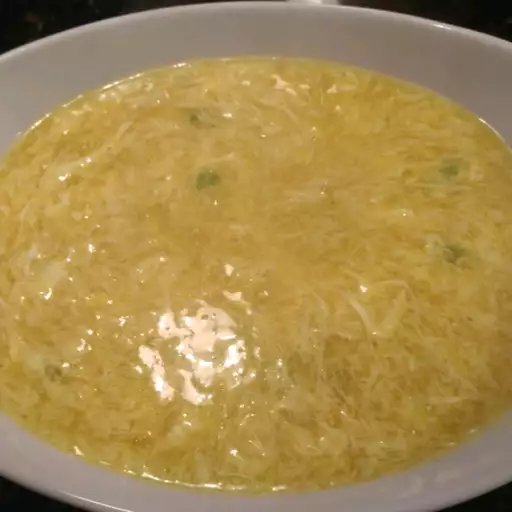

Egg Drop Soup

Description
Egg drop soup, also known as egg flower soup, is a simple and comforting Chinese soup that features delicate strands of beaten eggs floating in a savory chicken or vegetable broth.
It is a popular dish in Chinese cuisine and is enjoyed in various East Asian countries.
Ingredients
- Chicken or Vegetable Broth: 4 cups
- Eggs: 2 to 3 large eggs (beaten)
- Soy Sauce: 1 to 2 tablespoons
- Ginger: 1 teaspoon (freshly grated or minced)
- White Pepper: 1/4 teaspoon (ground)
- Salt: 1/4 teaspoon (optional, adjust according to taste)
- Cornstarch: 1 tablespoon (dissolved in 2 tablespoons of water)
- Green onions (Scallions): 2 to 3 stalks, thinly sliced (for garnish)
Steps
- Heat 4 cups of chicken or vegetable broth in a pot until it simmers gently.
- In a separate bowl, beat 2 to 3 large eggs until well combined.
- Stir in 1 to 2 tablespoons of soy sauce and 1 teaspoon of freshly grated or minced ginger into the simmering broth.
- Add 1/4 teaspoon of ground white pepper to the broth for a mild peppery flavor. You can also add 1/4 teaspoon of salt if desired.
- Dissolve 1 tablespoon of cornstarch in 2 tablespoons of water and stir it into the broth. This will slightly thicken the soup.
- While stirring the broth gently in one direction, gradually pour the beaten eggs into the pot in a thin, steady stream. The eggs will cook and form delicate ribbons as they hit the hot liquid.
- Optional: If you prefer, you can add additional ingredients like tofu, corn kernels, peas, carrots, mushrooms, or spinach to the soup at this stage.
- Remove the pot from the heat once the eggs are cooked and the soup is slightly thickened.
- Serve the egg drop soup hot in individual bowls, garnishing with thinly sliced green onions (scallions).